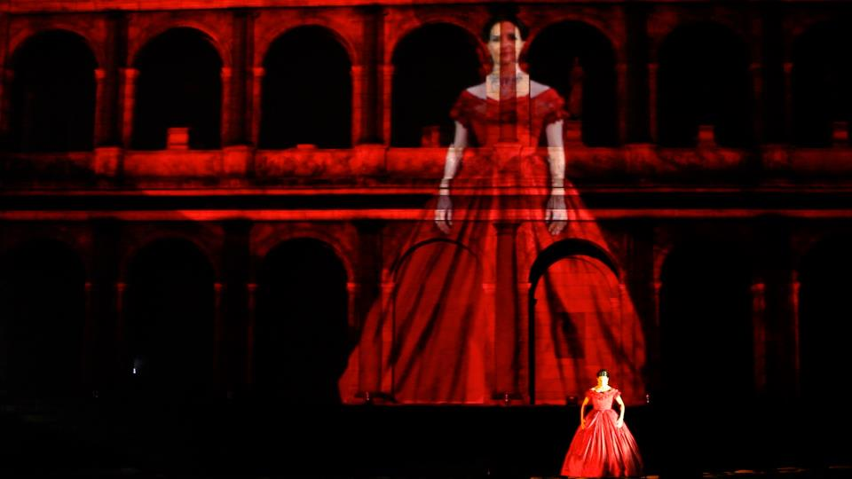
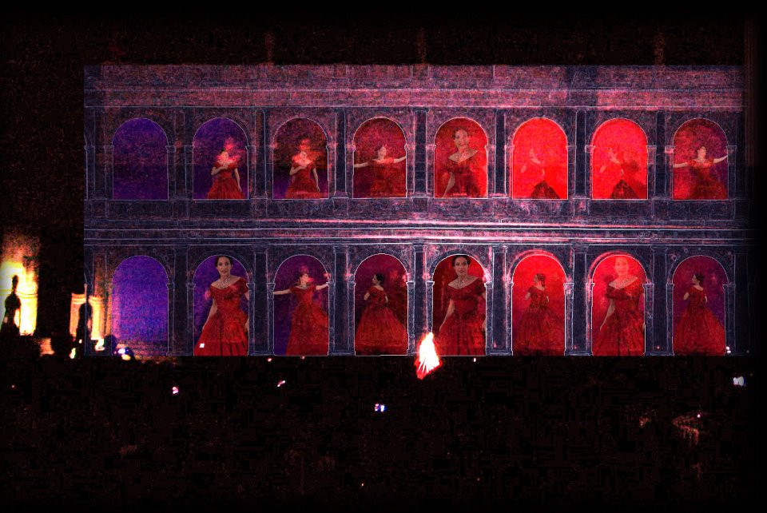
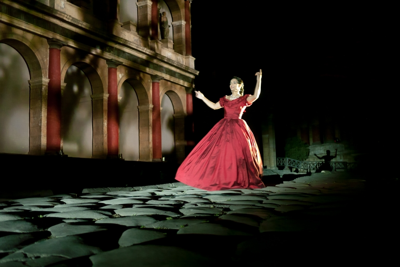
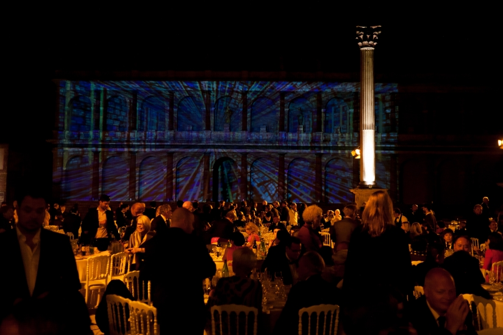
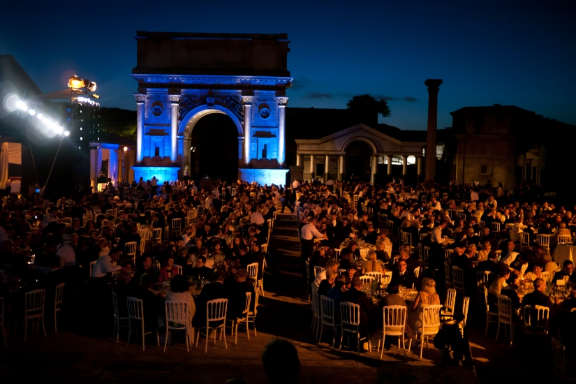

For Filmmaster Events, Cristian Taraborrelli is the artistic director of the 3D video mapping and light design show created for the Gala Dinner of Intercoiffure’s 21st World Congress, the most important quadrennial event in the hairdressing industry and for the entrepreneurs of the Beauty Care business. Held at Cinecittà Studios in Rome on June 12, 2012, before more than 1,000 guests from all over the world, the show combined the visionary art of video mapping with the live performance of soprano Giacinta Nicotra. The evening also featured the flag handover ceremony to the next host country, China.
Per Filmmaster Events, Cristian Taraborrelli è direttore artistico dello spettacolo di video mapping 3D e light design realizzato per il Gala Dinner del 21° Congresso Mondiale Intercoiffure, il più importante appuntamento quadriennale dell’industria dell’hairdressing e degli imprenditori del settore Beauty Care. Svoltosi negli studi di Cinecittà a Roma il 12 giugno 2012, davanti a più di 1.000 ospiti provenienti da tutto il mondo, lo spettacolo ha unito l’arte visionaria del video mapping alla performance dal vivo del soprano Giacinta Nicotra. La serata ha incluso anche la cerimonia di passaggio della bandiera al prossimo paese ospitante, la Cina.
Pour Filmmaster Events, Cristian Taraborrelli est le directeur artistique du spectacle de video mapping 3D et de light design créé pour le Gala Dinner du 21e Congrès Mondial Intercoiffure, le plus important rendez-vous quadriennal de l’industrie de la coiffure et des entrepreneurs du secteur Beauty Care. Organisé dans les studios de Cinecittà à Rome le 12 juin 2012, devant plus de 1 000 invités venus du monde entier, le spectacle a uni l’art visionnaire du video mapping à la performance live de la soprano Giacinta Nicotra. La soirée comprenait également la cérémonie de passation du drapeau au prochain pays hôte, la Chine.
La Visione — Quando il Video Mapping incontra la Lirica
Intercoiffure rappresenta il primo esperimento di un linguaggio inedito: l’unione tra video mapping 3D e arie liriche eseguite dal vivo. Un territorio inesplorato in cui la proiezione architettonica non è semplice decorazione, ma diventa scenografia vivente che dialoga con la voce del soprano, creando un’esperienza immersiva dove le architetture di Cinecittà si trasformano, si decompongono e rinascono al ritmo della musica.
Questa fusione tra tecnologia digitale e tradizione operistica segnerà un punto di svolta nel percorso artistico di Taraborrelli, aprendo la strada a una ricerca che lo porterà a integrare sempre più profondamente il linguaggio video nella drammaturgia dello spettacolo dal vivo.
Intercoiffure represents the first experiment with an unprecedented language: the fusion of 3D video mapping and live operatic arias. An unexplored territory where architectural projection is not mere decoration, but becomes a living scenography that dialogues with the soprano’s voice, creating an immersive experience where Cinecittà’s architectures transform, deconstruct, and are reborn to the rhythm of the music.
This fusion of digital technology and operatic tradition would mark a turning point in Taraborrelli’s artistic journey, paving the way for a research that would lead him to integrate video language ever more deeply into the dramaturgy of live performance.
Intercoiffure représente la première expérience d’un langage inédit : la fusion entre le video mapping 3D et les airs lyriques interprétés en direct. Un territoire inexploré où la projection architecturale n’est pas simple décoration, mais devient une scénographie vivante qui dialogue avec la voix de la soprano, créant une expérience immersive où les architectures de Cinecittà se transforment, se décomposent et renaissent au rythme de la musique.
Cette fusion entre technologie numérique et tradition opératique marquera un tournant dans le parcours artistique de Taraborrelli, ouvrant la voie à une recherche qui l’amènera à intégrer toujours plus profondément le langage vidéo dans la dramaturgie du spectacle vivant.
L'Evento — Intercoiffure, Filmmaster, Cinecittà
Il Cliente
Intercoiffure Mondial (fondata a Parigi nel 1925)
La più importante federazione internazionale del mondo della coiffure: oltre 3.000 saloni indipendenti d'eccellenza in più di 50 paesi. Fondata a Parigi nel 1925 da Antoine de Paris — il pioniere del bob taglio per signora — raccoglie le insegne più prestigiose del mondo dell'hairdressing artistico. Il Congresso Mondiale è il vertice quadriennale di tutto il settore: dieci giorni di sfilate, dimostrazioni tecniche, premiazioni, gala dinner. Roma 2012 è la 21a edizione, presieduta dall'italiano Salvatore Sodano.
Il Produttore
Filmmaster Events
Casa di produzione italiana di riferimento per gli eventi internazionali di grande scala. Fondata da Andrea de Micheli, ha firmato cerimonie olimpiche (Torino 2006, Sochi 2014, Rio 2016, Pyeongchang 2018, Beijing 2022, Milano-Cortina 2026), grandi convention industriali (Iveco, Ferrari, Pirelli, Lavazza), eventi istituzionali italiani e mediorientali. Il sodalizio con Cristian Taraborrelli si articola su una decade di progetti, dall'Intercoiffure 2012 al più recente Iveco Connecting Dots 2024 e all'Italian Souvenir di Milano-Cortina 2026.
Il Luogo
Cinecittà Studios (Roma, fondata 1937)
Gli storici Studi Cinematografici di Roma — la fabbrica dei sogni, come la chiamava Federico Fellini — sono il luogo dove sono nati capolavori come Ben-Hur, La Dolce Vita, C'era una volta in America, Il Gattopardo, Roma. Per il Gala Dinner Intercoiffure, la scelta di Cinecittà non è casuale: lo spazio scenico è già di per sé un set, una macchina della finzione, un palinsesto su cui il video mapping può comporre una nuova narrazione. Cristian Taraborrelli tornerà a Cinecittà più volte negli anni successivi.
La Performer
Giacinta Nicotra (soprano)
Soprano italiano di scuola lirica tradizionale, attiva nei principali teatri d'opera italiani e nei circuiti del concerto sinfonico-operistico. Per Intercoiffure interpreta arie del grande repertorio italiano (Puccini, Verdi, Bellini), inserite con regia di Taraborrelli all'interno della partitura visiva del video mapping. La sua voce, al centro dello spazio scenico di Cinecittà, diventa il punto di sintesi fra digitale e umano: la tecnica più antica del teatro — il canto a fiato — dialoga con la tecnologia più nuova del visivo.
The Client
Intercoiffure Mondial (founded in Paris, 1925)
The most important international federation of the world of coiffure: over 3,000 independent salons of excellence in more than 50 countries. Founded in Paris in 1925 by Antoine de Paris — the pioneer of the women's bob cut — it gathers the most prestigious signatures of artistic hairdressing. The World Congress is the discipline's quadrennial peak event: ten days of catwalks, technical demonstrations, awards, gala dinners. Rome 2012 was the 21st edition, chaired by Italian Salvatore Sodano.
The Producer
Filmmaster Events
The reference Italian production house for large-scale international events. Founded by Andrea de Micheli, it has signed Olympic ceremonies (Turin 2006, Sochi 2014, Rio 2016, Pyeongchang 2018, Beijing 2022, Milan-Cortina 2026), major industrial conventions (Iveco, Ferrari, Pirelli, Lavazza), Italian and Middle Eastern institutional events. Its bond with Cristian Taraborrelli runs across a decade of projects, from Intercoiffure 2012 to the more recent Iveco Connecting Dots 2024 and the Italian Souvenir of Milan-Cortina 2026.
The Venue
Cinecittà Studios (Rome, founded 1937)
The historic Roman film studios — the dream factory, as Federico Fellini called them — are the place where masterpieces such as Ben-Hur, La Dolce Vita, Once Upon a Time in America, The Leopard, Roma were born. For the Intercoiffure Gala Dinner, the choice of Cinecittà was not casual: the scenic space is already a set, a machine of fiction, a palimpsest on which video mapping can compose a new narrative. Cristian Taraborrelli would return to Cinecittà several times in the following years.
The Performer
Giacinta Nicotra (soprano)
Italian soprano of traditional opera school, active in Italy's main opera houses and on the symphonic-operatic concert circuit. For Intercoiffure she performs arias from the great Italian repertoire (Puccini, Verdi, Bellini), inserted by Taraborrelli's direction within the visual score of the video mapping. Her voice, at the centre of Cinecittà's scenic space, becomes the point of synthesis between digital and human: the most ancient technique of theatre — breath singing — dialogues with the most novel technology of the visual.
Le Client
Intercoiffure Mondial (fondée à Paris en 1925)
La plus importante fédération internationale du monde de la coiffure : plus de 3 000 salons indépendants d'excellence dans plus de 50 pays. Fondée à Paris en 1925 par Antoine de Paris — le pionnier de la coupe au carré pour dame — elle rassemble les enseignes les plus prestigieuses de la coiffure artistique. Le Congrès Mondial est le sommet quadriennal de la discipline : dix jours de défilés, démonstrations techniques, remises de prix, dîners de gala. Rome 2012 est la 21e édition, présidée par l'italien Salvatore Sodano.
Le Producteur
Filmmaster Events
Maison de production italienne de référence pour les événements internationaux à grande échelle. Fondée par Andrea de Micheli, elle a signé des cérémonies olympiques (Turin 2006, Sotchi 2014, Rio 2016, Pyeongchang 2018, Pékin 2022, Milan-Cortina 2026), de grandes conventions industrielles (Iveco, Ferrari, Pirelli, Lavazza), des événements institutionnels italiens et moyen-orientaux. Le sodalité avec Cristian Taraborrelli s'étend sur une décennie de projets, d'Intercoiffure 2012 à Iveco Connecting Dots 2024 et à l'Italian Souvenir de Milan-Cortina 2026.
Le Lieu
Cinecittà Studios (Rome, fondés en 1937)
Les studios de cinéma historiques de Rome — l'usine des rêves, comme les appelait Federico Fellini — sont le lieu où sont nés des chefs-d'œuvre comme Ben-Hur, La Dolce Vita, Il était une fois en Amérique, Le Guépard, Roma. Pour le Gala Dinner Intercoiffure, le choix de Cinecittà n'est pas anodin : l'espace scénique est déjà en lui-même un décor, une machine de fiction, un palimpseste sur lequel le video mapping peut composer une nouvelle narration. Cristian Taraborrelli reviendra à Cinecittà à plusieurs reprises dans les années suivantes.
L'Interprète
Giacinta Nicotra (soprano)
Soprano italienne de tradition lyrique, active dans les principaux opéras italiens et sur le circuit du concert symphonique-opératique. Pour Intercoiffure, elle interprète des airs du grand répertoire italien (Puccini, Verdi, Bellini), insérés par la réalisation de Taraborrelli à l'intérieur de la partition visuelle du video mapping. Sa voix, au centre de l'espace scénique de Cinecittà, devient le point de synthèse entre numérique et humain : la technique la plus ancienne du théâtre — le chant au souffle — dialogue avec la technologie la plus récente du visuel.
Per il settore beauty, la produzione moda, i brand cosmetici
Lo studio è specializzato in eventi di alta gamma per il settore beauty, hairdressing e moda: gala dinner, sfilate, lanci prodotto, congressi internazionali. Per Intercoiffure 2012 ha unito direzione artistica, scenografia e regia visiva in un'unica firma. La pluriennale collaborazione con Filmmaster Events garantisce una macchina produttiva di livello olimpico per progetti che richiedono precisione, scala internazionale e regia narrativa. Per richieste di gara, brief o consulenza creativa: creativestriketeam@libero.it.
The studio specialises in high-end events for the beauty, hairdressing and fashion sectors: gala dinners, runway shows, product launches, international congresses. For Intercoiffure 2012 it brought artistic direction, scenography and visual direction under a single signature. The long-running partnership with Filmmaster Events guarantees an Olympic-grade production machine for projects that require precision, international scale and narrative direction. For tenders, briefs or creative consulting: creativestriketeam@libero.it.
Le studio est spécialisé dans les événements haut de gamme pour la beauté, la coiffure et la mode : dîners de gala, défilés, lancements produit, congrès internationaux. Pour Intercoiffure 2012 il a réuni direction artistique, scénographie et réalisation visuelle sous une seule signature. La collaboration durable avec Filmmaster Events garantit une machine de production de niveau olympique pour des projets qui exigent précision, échelle internationale et direction narrative. Pour appels d'offres, briefs ou conseil créatif : creativestriketeam@libero.it.
Video
Gallery





Rassegna Stampa
Team Creativo
Tags